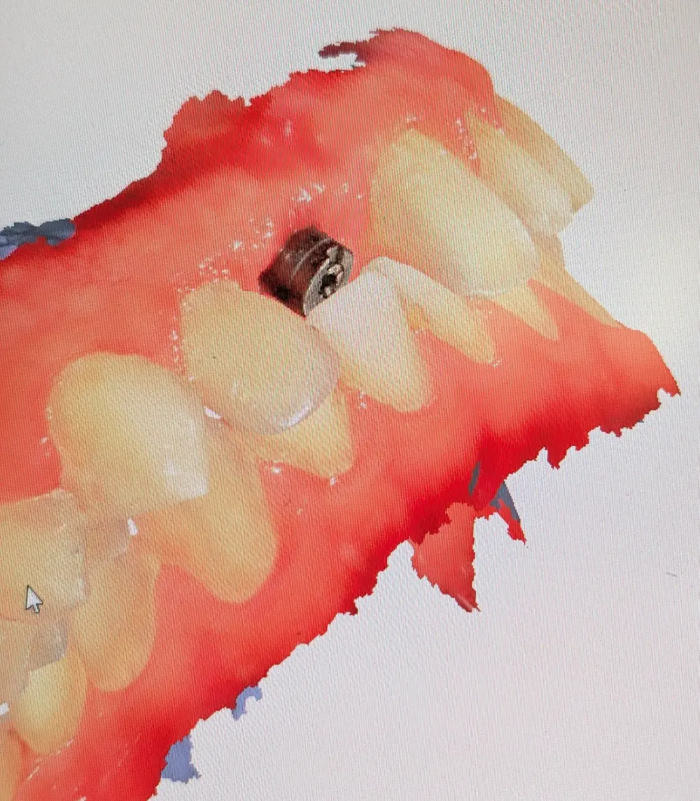

در این کیس بیمار با Deep Bite شدید و ایمپلنت سانترال برای ارزیابی ارتودنسی ارجاع شده بود، ولی جهت بررسی امکان مدیریت فضا بدون ارتودنسی به من مراجعه کرد.
مهمترین چالش در بازسازی ایمپلنت سانترال، محدودیتهای ناشی از اکلوژن دیپ بایت بود که در تصویر هم کاملاً مشخص است.
در بیماران Deep Bite، همیشه باید از ابتدا حواسمان باشد که امکان ساخت یک رستوریشن تمامسرامیک ایدهآل همیشه وجود ندارد و نباید دید تونلی داشته باشیم.
اگر فضای فانکشنال ناکافی باشد:
این موضوع بخشی از تفکر اولیهی مدیریت فضا در چنین کیسهایی است.
به دلیل محدودیت فضا و نیاز به کنترل بهتر فضای موجود، رستوریشن پیچشونده انتخاب منطقیتر است.
ترجیح من استفاده از Ti-base است، به دلایل زیر:
درصورتیکه بعد از انتخاب رستوریشن و اتصال، فضا هنوز کافی نباشد، اناملوپلاستی خفیف دندانهای قدامی پایین راهکار نهایی است.
این مداخله:
این اصلاح کوچک میتواند فضای قابل قبول برای بازسازی پروتزی ایجاد کند، بدون اینکه نیاز به وارد کردن بیمار به پروسه ارتودنسی کامل باشد.
در این بیمار Deep Bite با چالش فضای محدود، مسیر تصمیمگیری به این صورت بود: